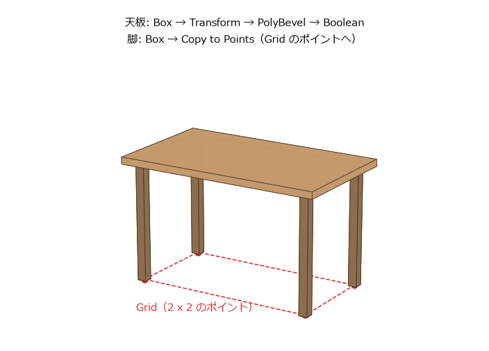

はじめてのモデリング
この章では、図 10 の机を作りながら、SOP の基本的なノードの使い方を覚える。天板は箱の角を丸め、配線用の穴を開ける。脚は 1 本だけ作り、4 か所にコピーする。

図 10 この章で作る机（寸法から描いた完成形のイメージ）
完成したネットワークは 図 11 のようになる。同じネットワークは、サンプルコードの build_table.py でも作れる（はじめに の「サンプルコードの使い方」を参照）。
図 11 机のネットワーク
机の寸法は次のとおりとする。
部分 |
寸法（m） |
|---|---|
天板 |
幅 1.2、厚さ 0.04、奥行き 0.7 |
机の高さ（床から天板の上面まで） |
0.72 |
脚 |
断面 0.05 x 0.05、長さ 0.68（= 0.72 - 0.04） |
脚の位置 |
天板の端から脚の中心まで 0.08 |
配線用の穴 |
半径 0.03 |
Geometry ノードを作る
ネットワークエディターが
/objを表示していることを確かめる。別の場所を表示しているときは、U を何度か押して戻る。Tab を押して
geometryと入力し、Geometry を選んで配置する。ノードの名前を
tableに変える。ノードをダブルクリックして中に入る。中はまだ空である。
以降の操作は、全て table の中で行う。
天板を作る
Box ノードを作り、名前を
topにする。Size を1.2、0.04、0.7にする。この時点では、天板は原点を中心に置かれている。Transform ノードを作り、名前を
lift_topにする。topの出力をlift_topの入力につなぐ。Translate の Y を0.7にする。天板の中心の高さは、脚の長さ 0.68 に天板の厚さの半分 0.02 を足した 0.7 である。PolyBevel ノードを作り、名前を
bevel_topにする。lift_topの出力をつなぐ。Distance を0.005にすると、天板の全ての辺が 5 mm だけ丸く削られる。
Tab メニューで作ったノードは、選んでいたノードの下に自動的につながることがある。つながっていない場合や、違うノードにつながった場合は、ワイヤーをつなぎ直す。新しいノードを作るたびに、そのノードに Display フラグを移して結果を確かめるとよい。
配線用の穴を開ける
Boolean ノードは、2 つの形状の和、差、積を計算する。ここでは、天板から円柱を引いて穴を開ける。
Tube ノードを作り、名前を
holeにする。次のパラメーターを設定する。Primitive Type: Polygon
End Caps: オン（円柱の上下にふたをする）
Radius:
0.03、0.03Height:
0.2Columns:
24（円周の分割数）Center:
0.45、0.68、-0.25（天板の右奥。天板を上下に貫く高さ）
Boolean ノードを作り、名前を
cut_holeにする。1 番目（左）の入力にbevel_topを、2 番目（右）の入力にholeをつなぐ。Operation を Subtract にする。1 番目の入力から 2 番目の入力を引いた形が出力される。
Boolean ノードは、どちらの入力も閉じた（穴の無い）形状であることを前提にしている。円柱の End Caps をオンにしたのはこのためである。
脚を作る
脚は 1 本だけ作り、Copy to Points ノードで 4 か所にコピーする。コピーする先は、Grid ノードで作る 4 個のポイントである。
Box ノードを作り、名前を
legにする。Size を0.05、0.68、0.05にする。Center の Y を0.34にして、脚の下端が床（y = 0）に来るようにする。Grid ノードを作り、名前を
leg_positionsにする。次のパラメーターを設定する。Orientation: ZX Plane（地面に平行な面）
Size:
1.04、0.54（天板の幅と奥行きから、両端の 0.08 ずつを引いた値）Rows:
2、Columns:2
行と列が 2 ずつなので、グリッドの四隅の 4 個のポイントができる。
Copy to Points ノードを作り、名前を
copy_legsにする。1 番目の入力にlegを、2 番目の入力にleg_positionsをつなぐ。1 番目の入力の形状が、2 番目の入力の各ポイントにコピーされる。Transform Using Implicit Target Point Normals If No Point N Attribute をオフにする。
最後の手順は重要である。Copy to Points ノードは、コピー先のポイントに法線（N アトリビュート）が無い場合、そのポイントを含む面の向きを法線とみなし、コピーの Z 軸をその向きに合わせる。グリッドの面は上を向いているので、この設定がオンのままだと、脚が 90 度倒れて床に寝てしまう。コピーの向きを決めるアトリビュートについては、プロシージャルモデリングの実践 で詳しく説明する。
まとめる
Merge ノードを作り、名前を
mergeにする。cut_holeとcopy_legsをつなぐ。Merge ノードは、入力された全ての形状を 1 つにまとめる。Null ノードを作り、名前を
OUTにする。mergeの出力をつなぎ、Display フラグを立てる。
これで机ができた。ネットワークエディターでノードの上で MMB を押し続けると、そのノードの出力に含まれるポイントとプリミティブの数を確かめられる。OUT の出力は、ポイントが 104 個、プリミティブが 74 個になる。
パラメーターを変えてみる
プロシージャルな作り方の利点を確かめるため、作った後で寸法を変えてみる。
bevel_topの Distance を0.015にすると、天板の角の丸みが大きくなる。下流のcut_hole以降は自動的にやり直される。bevel_topの Bypass フラグを立てると、角を丸める前の形に戻る。フラグを戻すと、また丸くなる。holeの Center の X を変えると、穴の位置が動く。
一方、top の Size で天板の幅を変えると、天板だけが大きくなり、脚の位置はそのままになる。脚の位置を決めているのは leg_positions の Size であり、天板の幅とは独立した値だからである。机の高さを変える場合も、lift_top、leg、hole の 3 か所を書き換える必要がある。
このように、関係のある値を別々に入力すると、変更のたびに複数の場所を直すことになる。プログラムで言えば、同じ定数をあちこちに直接書いている状態である。この問題は、パラメーターから別のパラメーターを参照するエクスプレッションで解決できる（パラメーターとエクスプレッション）。
その他のよく使う SOP
この章で使わなかったものも含め、モデリングでよく使う SOP を挙げる。各ノードの詳しい使い方は、ノードのヘルプで確認できる。
ノード |
機能 |
|---|---|
Box、Sphere、Tube、Grid、Torus、Circle、Line |
基本的な形状を作る。 |
Transform |
移動、回転、拡大縮小する。 |
PolyExtrude |
面を押し出す。面を内側に縮める（インセット）こともできる。プロシージャルモデリングの実践 で使う。 |
PolyBevel |
辺や角を丸める、または面取りする。 |
Boolean |
2 つの形状の和、差、積を計算する。 |
Merge |
複数の形状を 1 つにまとめる。 |
Copy to Points |
形状を、別の形状の各ポイントにコピーする。 |
Subdivide |
面を細かく分割して滑らかにする。 |
Mirror |
形状を鏡に映したように反転してコピーする。 |
Fuse |
近くにあるポイントを 1 つにまとめる。 |
Blast |
指定した要素（ポイントやプリミティブ）を削除する。 |
Sweep |
曲線に沿って断面の形を掃引し、パイプのような形状を作る。 |
Scatter |
面の上にランダムにポイントを散らばらせる。 |
Object Merge |
別の Geometry ノードの中のノードの出力を取り込む。 |
File |
ファイルからジオメトリを読み込む。 |